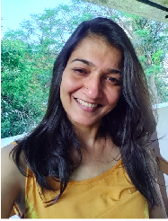

When I began my CTA journey, my ego image was of myself preparing to climb Mount
Everest. This image wasn't comforting as I felt this expedition isn't for everyone and I wasn't
sure if I was eligible.
I began my preparation by first acknowledging that I already have to climb this mountain. I
knew I enjoyed being a psychotherapist when I sometimes felt like Sherlock Holmes when I
had to dig deeper into the unconscious to discover the root-cause of my client's defense and
coping strategies. This brought in a lot of excitement and a safety net during sessions with
my clients. I used bodily experiences and intuitive thinking as I worked with my clients. In
the end I realized all I needed was to find a school or a concept that helps me connect my
work. I began to read a number of articles and books to see what theory fits best with my
style and approach. This approach made me feel appreciated, liberated and also allowed me
to accept my uniqueness.
During this process, I saw the importance of supervision and the contribution of my
supervisor. It really helped in re-evaluating and refining my thinking throughout the journey.
I gained a better understanding of myself as a professional and became aware of my own
games and scripty beliefs. I noticed how every time I sat to write my essay to please my
Parental figures, I struggled to maintain concentration and got frustrated with the number
of corrections I got back from my supervisor. I realized that to have a comfortable
experience it is not enough to just learn to connect theory with application but also to work
through our intrapsychic processes.
Once I began to work through my defenses, my essays flowed beautifully. I realized that CTA
shouldn’t be the factor that makes me feel ok, rather I have to be OK first to complete my
CTA journey. I did not climb Mount Everest, just went on a happy hike of self-exploration!
By Sushma Ramachandran
A Reflection of Who I Am In What I Do

My CTA process began with a sense of self acceptance followed by a
commitment to myself and a rough deadline of when I'd like to be through.
Having this clarity and goal helped me to stay on the course, even when my
workload grew or my motivations dropped. I would write/rewrite, read, reflect on
myself personally & professionally, using the generous support of several
colleagues, supervisors and mentors to guide me along the way. In all of this,
what I understood and value most, is that the CTA was an opportunity for me to
deeply know and own my identity and practice as a TA Educator and thereafter
passionately share this through my written and oral exams. It was no easy feat,
but one I'm really glad I undertook. The exam itself, especially the viva, was a
live experience of OKness both ways. I held an attitude of 'I am who I am and I
know what I know', which really served me well. I was calm and comfortable to
talk about my work authentically. We had 2 Ukrainians also who get certified
with us, their presence and determination reminding me starkly of the larger
socio-political scenario of being a global citizen, in addition to multiple other
roles and responsibilities we each hold. I am reflective of our bigger purpose
and sense of community as we are privileged to be part of this TA fraternity.
Nisha Rao - CTA Education